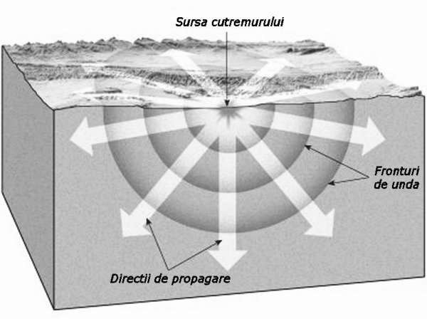
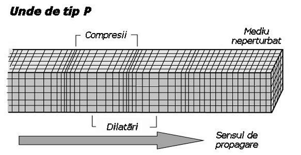

Unde mecanice
Nimic nu pare mai stabil decât Pământul, pe care construim casele, străzile, căile ferate. Doar sensibilitatea noastră limitată ne împiedică să constatăm
realitatea: solul se cutremură tot timpul!
 Activitatea experimentală 1C6−1
Activitatea experimentală 1C6−1
Investighează oscilaţiile permanente ale Pământului, cu mijloace aflate la îndemână.
Pasul 1 Umple un lighean cu apă şi pune−l pe podea.
Pasul 2 Fixează un indicator laser, astfel ca lumina trimisă de acesta să se reflecte pe apa din lighean şi să ajungă pe un perete, la câţiva
metri mai departe, într−un loc convenabil.
Observă pata de lumină de pe perete.
Chiar dacă suprafaţa apei din vas îţi pare nemişcată, pata de lumină de pe perete îşi modifică în permanenţă poziţia, semnalând că apa din vas nu este chiar
nemişcată!
Dacă solul se cutremură şi, odată cu acesta, şi clădirea în care te afli, în apa din vas apar unde, care deformează suprafaţa apei. Astfel, lumina
laserului se reflectă pe perete mereu în alt loc.
Chiar denivelările foarte mici ale suprafeţei apei din vas pot fi vizualizate astfel pe perete. Ai realizat astfel un seismoscop: un instrument cu
care poţi vizualiza activitatea seismică a Pământului.
Dispozitivul cu care au fost colectate datele prezentate în secţiunea 1A3, realizat dintr−un pendul elastic şi un mouse cuplat la calculator, poate
servi ca seismograf: instrument care poate înregistra activitatea seismică (figura 1C6−1).
|
Fig. 1C6-1. Seismograf simplu.
|
Mişcările violente ale solului se transmit suportului pendulului. Corpul atârnat de pendul nu este legat rigid de suport, ci prin intermediul firului
elastic.
Astfel, apar deplasări relative între corpul pendulului şi sol, deplasări care, prin intermediul mouse−ului, sunt înregistrate de calculator.
Seismograful realizat astfel nu este foarte sensibil: trebuie să "tropăi" în preajma dispozitivului pentru ca acesta să înregistreze ceva!
Pe principii asemănătoare pot fi realizate seismografe foarte sensibile (figura 1C6−2).
|
Fig. 1C6-2. Seismograf sensibil.
|
Acestea pot înregistra şi deplasările foarte mici ale soului, detectând o activitate permanentă. Figura 1C6−3 prezintă înregistrarea realizată
cu un seismograf sensibil a activităţii seismice (seismogramă).
 Provocarea 1C6−1
Provocarea 1C6−1
De ce oare Pământul se cutremură tot timpul?
Contrar aparenţelor, Pământul nu este o bucată mare de rocă, rigidă şi stabilă. Structura internă a Pământului este mai degrabă asemănătoare unui ou
(figura 1C6−4).
Fig. 1C6-4. Structura internă a Pământului.
Solul face parte dintr−o "coajă" (scoarţa terestră), foarte subţire în comparaţie cu dimensiunile Pământului (precum coaja oului în comparaţie
cu acesta). În plus, scoarţa terestră este fragmentată în mai multe plăci tectonice, care pur şi simplu plutesc în derivă pe materialul mai
degrabă fluid de sub scoarţă (figura 1C6−5).
Fig. 1C6-5. Plăcile tectonice.
Plăcile tectonice poartă pe ele continentele şi oceanele lumii şi sunt în permanentă mişcare: unele se îndepărtează, altele se presează reciproc, pătrunzând
uneori una sub cealalta.
Scoarţa terestră presată acumulează energie (ca un resort care este comprimat). Energia acumulată pe durata deceniilor sau secolelor este eliberată
brusc, în câteva secunde.
Uriaşa perturbaţie astfel rezultată se propagă în toate direcţiile, cu viteze de câţiva kilometri pe secundă, cutremurând întregul Pământ!
Activitatea experimentală 1C6−2
Declanşează cutremure în miniatură!
Pasul 1 Fixeaza pe masă, cu bandă adezivă, o coală de hârtie abrazivă ("şmirghel"), cu partea abrazivă în sus.
Pasul 2 Pune deasupra încă o coală de hârtie abrazivă, astfel încât parţile abrazive ale celor două coli să intre în contact.
Pasul 3 Pune deasupra o cărămidă (sau o carte masivă). Pune pe cărămidă, "în picioare", o cutie de carton înaltă (cum sunt cele în
care se pun tuburile de pastă de dinţi).
Cărămidă şi masa sunt asemenea plăcilor tectonice, iar cutia asemenea unei construcţii înalte (figura 1C6−6).
|
Fig. 1C6-6. Dispozitiv pentru modelarea declanşării cutremurelor.
|
Pasul 4 Fixează de coala abrazivă de deasupra un fir elastic, cu care să poţi tensiona gradual structura.
Pasul 5 Trage coala abrazivă de deasupra, în lungul mesei, tensionând gradual şi lent firul elastic.
Observă ce se întâmplă.
Tensionând gradual şi lent firul elastic, multă vreme nu se întâmplă nimic semnificativ. "Plăcile tectonice" par să nu se deplaseze (deformaţiile sunt
prea mici pentru a fi vizibile), dar acumulează din ce în ce mai multă energie.
Când se depăşeşte însă un prag, energia este eliberată brusc. Acceleraţiile sunt atât de mari, încât pot "zgudui" serios "clădirea", putând chiar să o
răstoarne!
Energia eliberată brusc de un cutremur se răspândeşte în toate direcţiile − acestea sunt undele seismice (figura 1C6−7).

Fig. 1C6-7. Unde seismice.
Pe măsura îndepărtării de locul perturbaţiei iniţiale, energia se repartizează pe tot mai multe particule − efectele seismului sunt tot mai mici la
distanţe mai mari.
Undele seismice sunt un "amestec" de unde longitudinale şi transversale (figura 1C6−8, a şi b).

a.
b.
Fig. 1C6-8. Tipuri de unde care alcătuiesc undele seismice: a. de tip P; b. de tip S.
Undele longitudinale, numite unde P (primare), se pot propaga atât prin zonele lichide de sub scoarţa terestră, cât şi prin zonele solide ale
scoarţei. Au viteze mari, de câţiva km/s (în granit, 5 km/s).
Undele transversale, numite unde S (secundare), se pot propaga doar prin zonele solide. Au viteze mai mici (aproximativ 60% din viteza undelor
P, în acelaşi material).
Pe seismograpa prezentată în figura 1C6−3 se observă distinct grupul undelor P (sosite primele la seismograf) şi cel al undelor S
(sosite mai târziu).
Această diferenţă oferă o primă indicaţie a locului în care s−a produs cutremurul.
Analiza datelor seismice este singura modalitate prin care putem investiga interiorul planetei! Aşa am aflat structura internă a Pământului, până
în centrul acestuia.